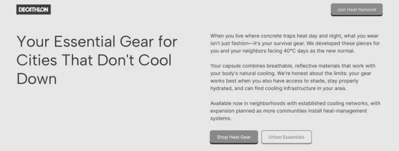
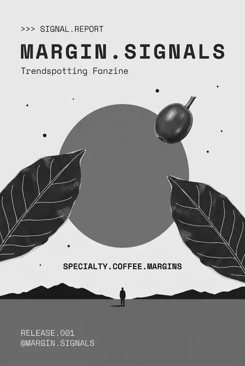
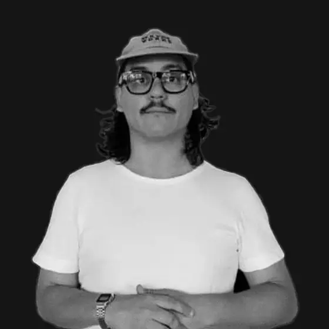

Now
- Relaunching Speculative Futures Madrid, the local chapter of The Design Futures Initiative, after a three-year pause (September 2026).
- Teaching Emerging Technologies in UDIT’s Online Master’s in UX Design (since April 2026).
Working on something that doesn’t have a clear future yet? Let’s talk.
Work
Projects and writing, grouped by theme: Futures of Climate · Futures of Food · Where Institutions Don’t Reach · AI and Personal Software · Futures
Futures of Climate
Cities adapting to a climate that didn’t ask permission. Work with students, institutions, and communities across Madrid and Buenos Aires.
Mercado San Telmo
Design fiction, with Near Future Laboratory (Fabien Girardin and Israel Viadest)
San Telmo Market was built in 1897 for a city that no longer exists. This design fiction imagines it in 2031.
Also: video introduction · tour narration:
Estación Fresca
Diegetic website
When the city hits 40°C, a 19th-century market becomes civil infrastructure. Part of the Mercado San Telmo universe.
Adaptive Museums
Interactive prototype, with Rohit Gupta at Heated Studio
A museum during a heat emergency, redesignated as civil shelter.
Also: video introduction
Desert Athleisure
Fictional product line, at Heated Studio

A fictional sportswear line for cities where summer heat regularly hits 40°C or above.
Also: landing page
Writing
- Day 3 of Norma
- notes from the first summer of Cool Station №1, inside the San Telmo market - Inhabiting the future
- climate design fiction with French spatial design master’s students - How I Prototyped an Alternative Future Climate with Design Fiction & GenAI
- How Madrid could adapt to extreme heat without losing its essence
- A speculative tour of San Telmo Market in a future Buenos Aires
- Collective trauma and community resilience after a climate disaster
Futures of Food
Food as a futures problem: what climate, culture, and politics are doing to what we eat, and what we might eat next.
Rescoldo
Diegetic archive
A seven-course dinner at Lanín 234, Barracas, documented as if autumn 2030 had already closed.
Writing
- A Manifesto for a New Argentinean Cuisine
- What is carbon-neutral gastronomy?
- What is ethical meat and sustainable proteins tasting?
- The gastronomic offer of San Telmo Market in a 15-minute city
Where Institutions Don’t Reach
The state arrives late, or not at all: a blackout in Buenos Aires, care built for a younger city, and the stories that don’t fit on an intake form.
Red de Aguante
Playable design fiction, for Lab de Mundanidad Forzada × Heated Studio
Buenos Aires, near future. The grid has failed. Water is rationed. What do people do?
Cuidados en Red
Design fiction
Buenos Aires has one of the oldest populations in Latin America and a care infrastructure that wasn’t built for it.
OFFicial
Voice prototype
A voice assistant for people navigating integration after displacement.
AI and Personal Software
Notes on building with tools I’m still figuring out, and the everyday friction of working alongside machines.
- Teaching Artificial Intelligence to UX Designers
- notes from a masterclass with Fabien Girardin and Rohit Gupta for UX design students at UDIT - Making Software Without Having Learned to Program
- a perspective from Latin America - The Hand of God Now Lasts Three Seconds
- Training Creatures I Don't Understand
- They Asked Me If I Was a Bot
- No, the plane doesn’t have AI
- and that opens up more interesting questions than the ones it tries to answer
Futures
Essays, workshops, and frameworks for thinking about what comes next when familiar patterns stop working.
- The Most Measured Body on the Planet Is Thirteen Years Old
- Could, Should, Might, Don't
- a practitioner’s reading - Designing Futures from Fugue
- a workshop on brains that leave (and those that might return) - What if the State Designed Futures?
- a day in Buenos Aires that revealed how speculative design, weak signals, and institutional fiction can become fundamental tools for public policy - Viveza Criolla
- a design fiction lens on strategic adaptation - Diegetic Discovery Kit
- a practical guide to changing how you see the everyday objects and spaces around you - Turning the Tide
- how Argentina can transform short-term survival into a future-ready strategy - Comment réimaginer le futur au quotidien?
- re-imagining everyday futures - Prospective Methodology Based on Futures Design
- A Shift Towards Strategic Foresight
- how to prepare for and anticipate contingencies by proposing narratives and artifacts through futures design
Editorial
A channel and publication for documenting practice, following weak signals, and making speculative thinking tangible.
Otros Futuros
Futures design, design fiction, speculative design.
Weak signals from the present. Futures-thinking methods. Speculative experiments, live. The orientation is toward making things: show the future, don’t tell the future.
What I’ve learned, what I’ve applied, what I’m still testing: from practice.
New content every week. Watch on YouTube.
MARGIN.SIGNALS

An independent publication tracking weak signals from cultural margins before they reshape the industry.
Release 001: Specialty.Coffee.Margins
What happens when coffee's margins challenge its center? This trendspotting fanzine explores master plant protocols, intentional defect fermentation, and decolonised cupping: patterns of hierarchy inversion you'll see elsewhere soon.
Limited prototype run. Access by direct request only.
| Digital edition | €8 |
| Physical edition (limited print) | €15 |
| Dual bundle (digital + print) | €24 |
Request your copy at nicolas.bronzina@gmail.com or via @margin.signals on Instagram.
Field notes
Sound, ritual, tools, places, and everyday forms of attention.
Play•ground
An ongoing music project exploring sound as an instrument, an environment, and a way of being present. Play•ground moves between web-based instruments, live audio, spatial listening, and inhabitable sound.
- play•ground mk-1
- Web-based music creation tool. 8-track drum sequencer, synthesizer, 4-slot looper with mic input.
- play•ground mk-2
- two decks and a mixer in the browser. drop two records, grab the disc, crossfade.
- play•ground mk-air
- Experience live audio that exists only in the moment: no recording, no archive. Broadcasts that challenge your relationship with permanence and presence.
- play•ground mk-dwell
- A habitable sound space. Your cursor is your position. Move toward a corner and a sound emerges, move away and it fades. The center breathes.
Coffee
An ongoing investigation into coffee as culture, ritual, equipment, labor, taste, and place.
- Coffee.txt
- Specialty coffee guide for Madrid.
- Coffee Decoded
- Practical guide to home coffee equipment.
About

My starting point is never technology. It’s someone specific, in a specific situation, dealing with a future that arrived without asking. I trained as a sociologist before becoming a designer, and it shows: I’m less interested in what the future looks like than in who has to live in it, and how.
As Managing Partner at BPP Analytics & Design, I combine sociological research, futures design, and experimentation to support high-stakes strategic decisions. At Heated Studio, which I co-founded, I help organizations imagine and prototype climate futures.
I co-lead the relaunch of Speculative Futures Madrid, the local chapter of The Design Futures Initiative, a global community of design and futures practitioners active in 29 cities. The chapter started in 2018 and brought PRIMER Europe to Matadero in 2019. After a three-year pause, we’re bringing it back in 2026.
I designed and teach the Emerging Technologies course for UDIT Madrid’s Online Master’s in UX Design, built on a position that treats AI neither with fear nor fascination, but as a cultural force to examine.
Earlier, at Near Future Laboratory and Girardin & Nova, I delivered design-fiction projects for global clients across telecommunications, finance, defense, and mobility, turning abstract risk into artifacts teams can argue about.
I document my practice through Otros Futuros, a YouTube channel where speculative thinking becomes tangible work, and publish MARGIN.SIGNALS, an independent zine tracking weak signals from cultural margins before they harden into trends.
I was born in Buenos Aires, a city that teaches you early that scenarios flip. That turned out to be professional training.
Listen: Nicolás, by Marcos (in Spanish)
Curriculum
Full CV: English (PDF, 43 KB) · español (PDF, 44 KB)
Experience
- 2026–present / Speculative Futures Madrid (The Design Futures Initiative), Chapter Co-Lead
- 2026–present / UDIT, Universidad de Diseño, Innovación y Tecnología (Madrid), Emerging Technologies Curriculum Designer, Online Master’s in UX Design
- 2025–present / Lab de Mundanidad Forzada, Research Coordinator & Lab Initiator: collaborative experiments on forced mundanity through ethnographic methods and design interventions
- 2024–present / Heated Studio, Co-founder & Design Fiction Lead
- 2024–present / BPP Analytics & Design, Managing Partner
- 2024–2025 / Girardin & Nova, Design Researcher
- 2023–2024 / Near Future Laboratory, Design Researcher
Teaching
- Universidad ORT Uruguay (Montevideo), Guest Professor, Master’s in Strategic Design and Innovation: turning future scenarios into diegetic artifacts, around three principles:
- Artifacts think: objects process ideas; they do not simply illustrate them.
- Ecosystems validate: surrounding contexts make speculation credible.
- Friction is the material: everyday imperfections ground future visions in reality.
- ESAA La Martinière-Diderot (Lyon), Guest Lecturer, DSAA Design Espace: climate design fiction for spatial-design students visiting Madrid, at Matadero
- UDIT (Madrid), Guest Lecturer, Master’s in UX Design: masterclass with Fabien Girardin and Rohit Gupta on AI-enhanced design fiction
- Domus Academy (Milan), Guest Workshop Co-facilitator: speculative urban futures for extreme heat
- CESBA, Consejo Económico y Social de la Ciudad de Buenos Aires, Event Organizer & Opening Keynote: futures design for public policy, and a proposed Futures Anticipation Unit
Education
- UDIT (Madrid), Master’s Degree in User Experience for the Design of Digital Products and Services
- Universidad del Salvador (Buenos Aires), Bachelor’s Degree in Sociology
- Institute for the Future (California), Certification in Future Thinking & Forecasting
Methods: Design fiction · Futures prototyping · Speculative scenarios · Strategic foresight · Weak-signals analysis · Ethnographic research · Workshop facilitation · AI-enhanced prototyping
Sectors: Climate adaptation · Urban resilience · Mobility · Defense · Financial services · Telecommunications